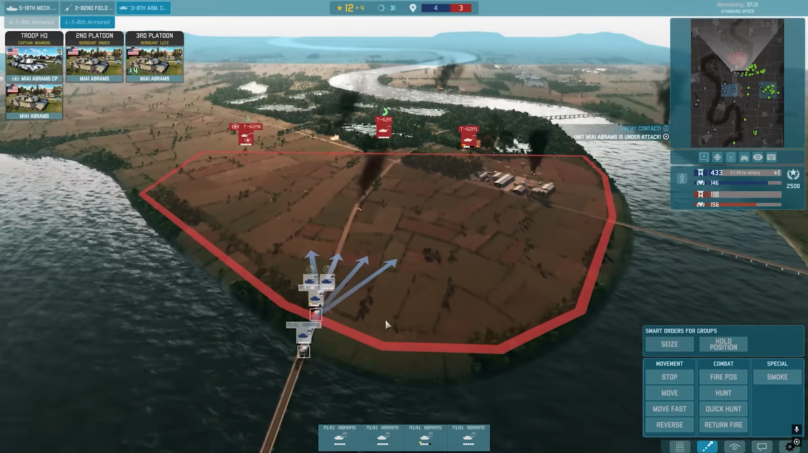
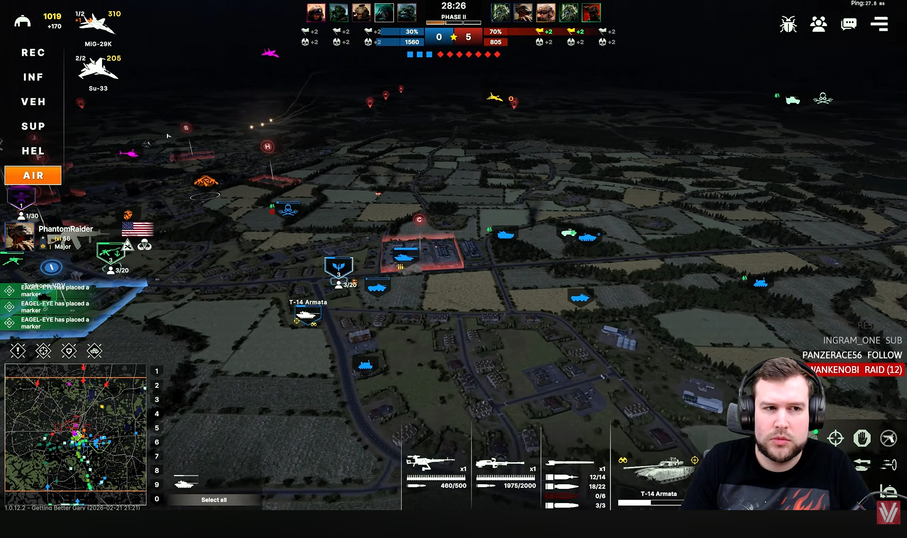
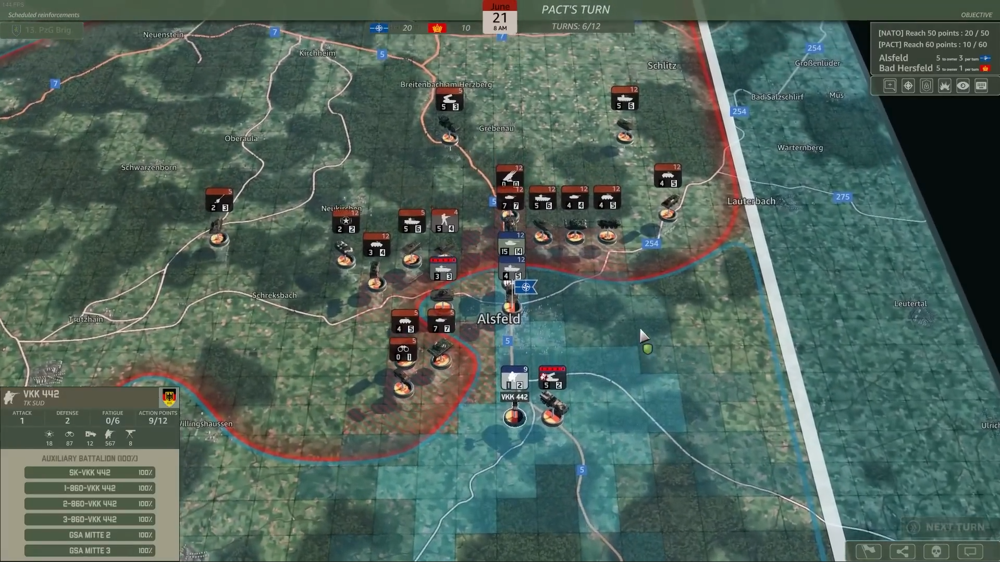
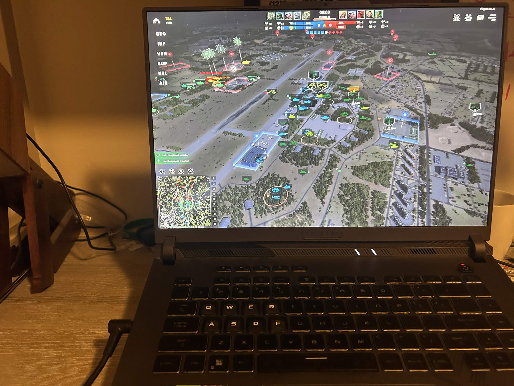
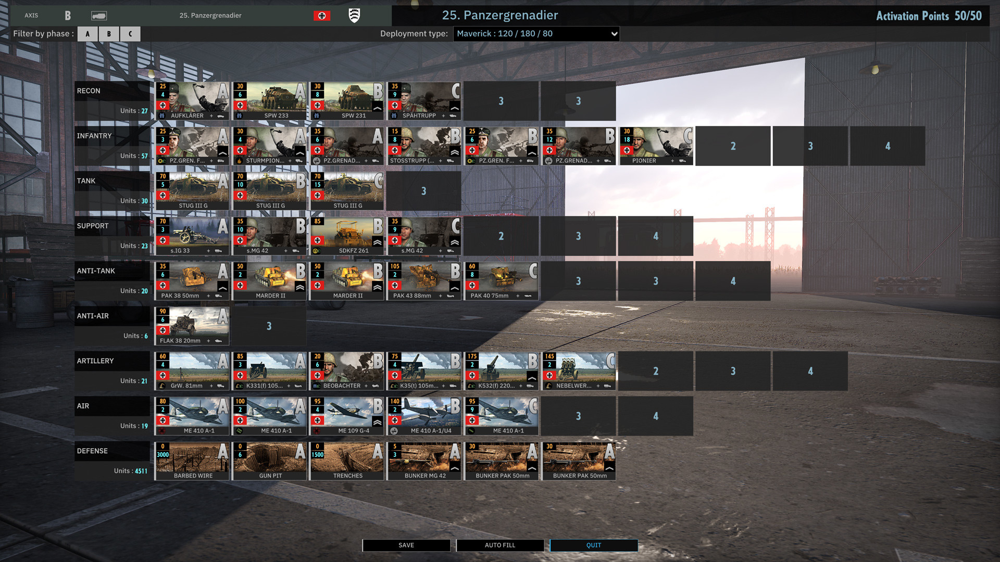
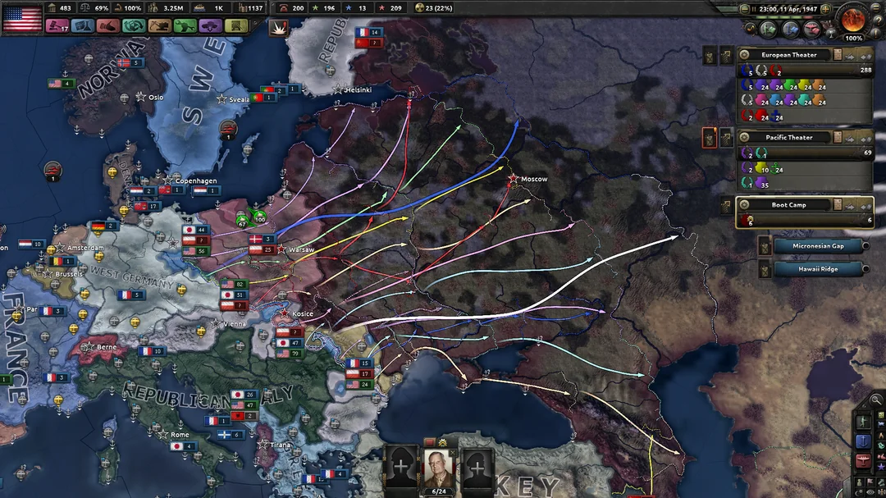

What Are Military Real Time Strategy Games?
Military real time strategy games simulate large scale military conflicts using real military units, tactics, and logistics systems. Players take command of command tanks, infantry, artillery pieces, aircraft, and missile systems.
Games like WARNO and Steel Division 2 focus on battlefield tactics where things such as positioning, reconnaissance, and combined arms tactics allow you to achieve victory.
Other real time strategy games such as Hearts of Iron IV and ICBM Escalation simulate entire nations, they allow players to manage a nation's industry, economy, diplomacy, espionage and intelligence, and warfare doctrines.

AI Prompt for text: "Explain what military real time strategy games are, focus on game like WARNO, Steel Division 2, HOI4, and ICBM Escalation"
Who Plays These Types of Games?
Players of military strategy games often enjoy history, military technology, and deep strategic gameplay.
The playerbase for these games are typically older than the average gaming audience, they are typically teenager and adults who enjoy much more strategic and complex gameplay.
These types of games also feature online communities where players can do things such as compete in multplayer matches and share and discuss strategy.

AI Prompt for text: "what kind of players play those games?"
When Are Military Real Time Strategy Games Played?
Military strategy games usually require longer playtime sessions than games in other genres so it is best to play them when you have an abundance of free time either by yourself or with friends.
Multiplayer matches in games such as WARNO may last up to 30 to 60 minutes and full campaigns can take hours to complete.
Some games feature grand strategy campaigns and can even last multiple days depending on the complexity of the game.

AI Prompt for text: “when are strategy games best played”
Where Are These Games Played?
Most real time strategy games are played on PCs and computers because they contain complex interfaces and require precise mouse control, and a variety of hotkeys to play.
Online multiplayer allows players from around the world to compete or cooperate with each other in battles.
Many strategy game communities exist on forums and Discord servers where players come together to play .

AI Prompt for text: “where are those types of games played”
How Do Military Real Time Strategy Games Work?
Most military real time strategy games take place on a large map which represents a battlefield or region, the map contains things like terrain, foliage, roads, and strategic zones to be captured.
Players control many different units and will have to manage them according to their respective strengths and weaknesses. Players will select units and give them orders on what to do, such as moving to a spot or attacking an enemy unit.
Another important feature in military real tim strategy games is the "fog of war", enemy forces are not visible to the player unless detected by one of their friendly units.
Players must also manage resources like money and supplies which are used to call in reinforcements, or repair and rearm units, mismanaging your logistics will lead to your battle ending in a disasterous defeat for you.

AI Prompt for text: “how to those types of games work”
Why Do People Enjoy Military Real Time Strategy Games
Military real time strategy games require a good combination of strategic planning, fast reaction times, and the ability to improvise and adapt to everchanging circumstances
Many military real time strategy games are also based on real life conficts, weapons, time periods, and military doctrines. This makes military real time strategy games popular among people with intrests in history.
Strategy games provide a very high skill ceiling, there is always room to improve your abilities.

AI Prompt for text: “why do players like those games”
AI Prompts Used
Prompts were used to generae text in order to put onto the page